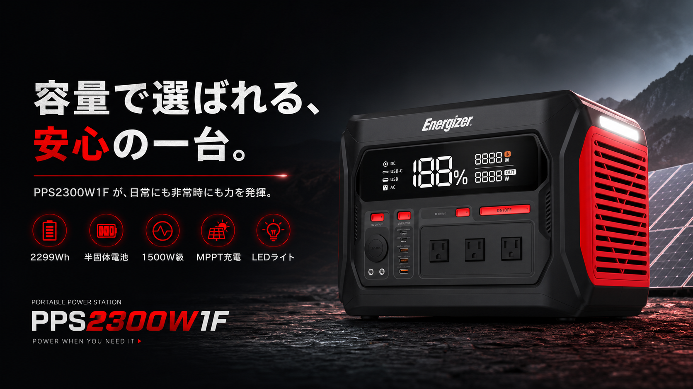

ETC100W は、日常に置きやすいコンパクト感
1.47インチTFT、タッチスイッチ、多ポート出力、289gの軽さを軸に、持ち出しやすさを伝えます。
製品ページへエグゼクティブレビュー用のトーンを保ちながら、実際に本地で開ける形にまとめたローカル版サイトです。 ETC100W と PPS2300W1F を中心に、製品の魅力、仕様、導線をひと目で追えるようにしています。

このローカル版は、商品理解に必要な情報だけを、自然な日本語で前に出すことを優先しています。

ETC100W は、100W クラスの最大出力、多ポート対応、1.47インチTFT、タッチスイッチを持つ、 持ち運びやすい設計が強みです。ローカル版では、この「使いやすさ」を前に出しています。
2299Wh の大容量、半固体電池、1500W 級双方向インバータ、AC/Anderson/DC5521 充電、 MPPT ソーラー充電を、用途ベースで説明できるように整えています。